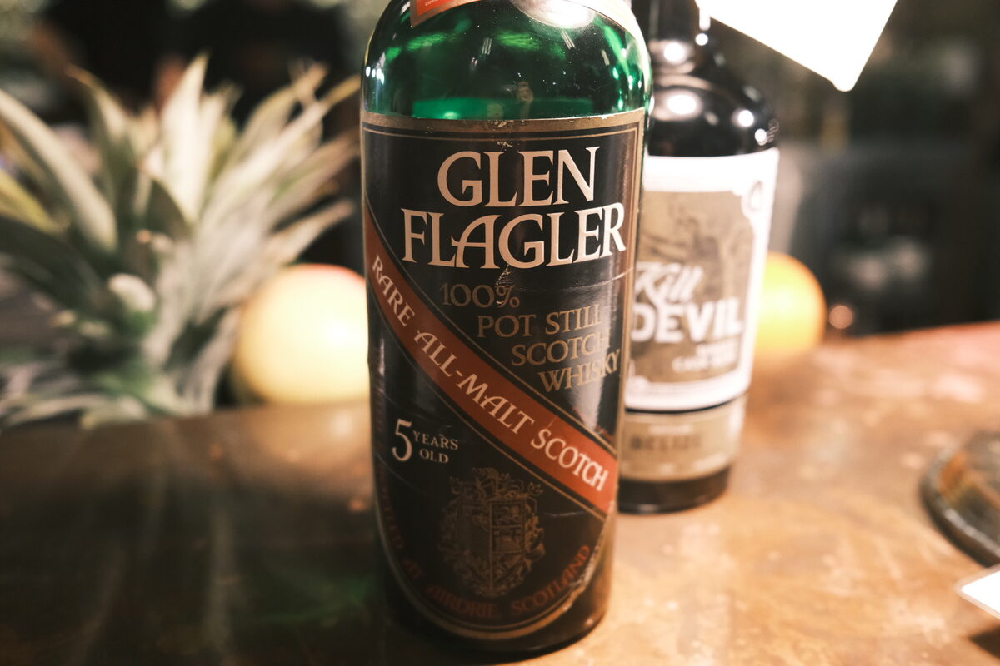

Glen Flagler "Rare All-Malt Scotch" 5 years 40%
Silent distillery. Bottling apparently for the Italian market. Parafilmed and everything!
Colour Straw. Unlikely any colouring here.
Nose Waxy and vegetal. Rather perfumed. Orchard fruits: pears, apples, ripe. Carrots and celery. Candied apples, boiled sweets. Lemon and limes. Citrus peels and their oils.
Palate A little watery – probably the ABV. Great herbal notes. Lemon balm. Apples, pears, orchard fruits. Caramel malt. A touch of wax.
Finish Moderate, quite mild. Mostly malt. Apple and pear danishes. Chai latte, predominantly cinnamon. Swirls of caramel. Milk chocolate and hazelnuts.
Comments Classic profile, one imagines. Wish it was bottled at a higher proof, texture lets it down. 82/100.

Posted by Dominic on 09 May 2021